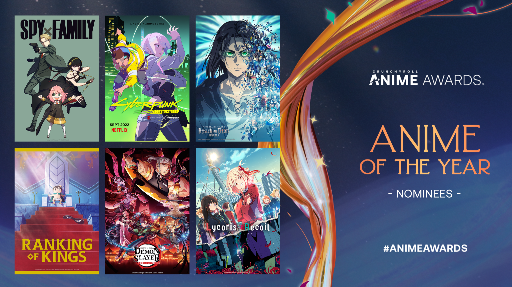
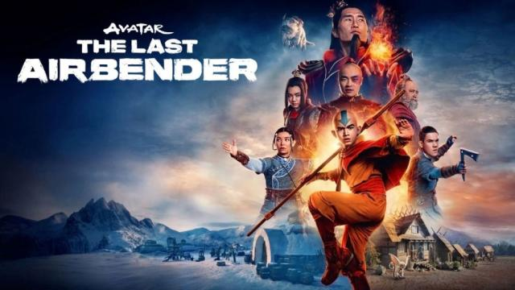

Tanggal rilis, trailer, dan berita terbaru mengenai Game Warzone Mobile
Warzone Mobile, game aksi battle royale dari Call of Duty, akan diluncurkan pada 21 maret 2024 untuk perangkat iOS dan Android. Game ini menawarkan pengalaman yang serupa dengan versi PC dan konsol, dengan dua peta battle royale utama dan beberapa peta multiplayer. Warzone Mobile dapat dimainkan secara gratis, tetapi ada opsi untuk membeli item di dalamnya. Pengguna juga dapat memanfaatkan kemajuan bersama antara versi mobile dengan versi PC dan konsol menggunakan ID Activision. Game ini mendukung penggunaan pengontrol dan kontrol sentuh, serta menyediakan opsi aksesibilitas untuk disesuaikan. Tertarik untuk mencoba? Anda bisa pra-registrasi di situs web Call of Duty. Klik untuk melihat informasi lebih lanjut.
10th Anime Trending Awards: Genre Awards Results
Pada Anime Trending Awards ke-10, terdapat 10 anime unik yang berhasil memenangkan 10 dari 11 kategori genre yang tersedia. Tengoku Daimakyou menjadi satu-satunya serial yang memenangkan dua penghargaan genre tahun ini: Anime Misteri atau Psikologis Tahun Ini dan Anime Supernatural Tahun Ini. Namun, Tengoku Daimakyou tidak berhasil memenangkan kategori Anime Aksi atau Petualangan Tahun Ini atau Anime Ilmiah Fiksi atau Mecha Tahun Ini dengan selisih suara yang tipis. Selain itu, Jujutsu Kaisen Season 2 memenangkan kategori Anime Aksi atau Petualangan Tahun Ini, sementara Dr. STONE New World memenangkan Anime Ilmiah Fiksi atau Mecha Tahun Ini. MASHLE: MAGIC AND MUSCLES memenangkan Anime Komedi Tahun Ini, sementara 【OSHI NO KO】 meraih Anime Drama Tahun Ini. The Eminence in Shadow memenangkan Anime Fantasi Tahun Ini dengan selisih suara yang tipis, sedangkan My Happy Marriage memenangkan Anime Romansa Tahun Ini. Blue Orchestra memenangkan Anime Musik Tahun Ini, sedangkan SPY X FAMILY S2 dan BLUE LOCK memenangkan Anime Slice of Life Tahun Ini dan Anime Olahraga Tahun Ini secara berturut-turut. Klik untuk melihat informasi lebih lanjut.
Review 'Avatar: The Last Airbender': Adaptasi Live-Action yang Membawa Harapan bagi Waralaba
Netflix merilis adaptasi live-action baru dari "Avatar: The Last Airbender" pada 22 Februari. Adaptasi ini berhasil menyajikan kisah yang lebih padat dalam delapan episode, menghormati seri animasi aslinya sambil memberikan pengalaman baru. Cerita yang lebih dewasa dan visual yang mencolok menambah kekayaan dunia fantasi seri ini. Kesetiaan terhadap karakter-karakter yang dicintai juga menjadi salah satu keunggulan utama adaptasi ini. Meskipun terdapat beberapa perubahan dalam alur cerita, seri ini mampu mempertahankan esensi dan daya tariknya. Diharapkan kedatangan musim kedua dan ketiga akan memberikan kepuasan lebih lanjut bagi penggemar baru dan lama. Klik untuk melihat informasi lebih lanjut.